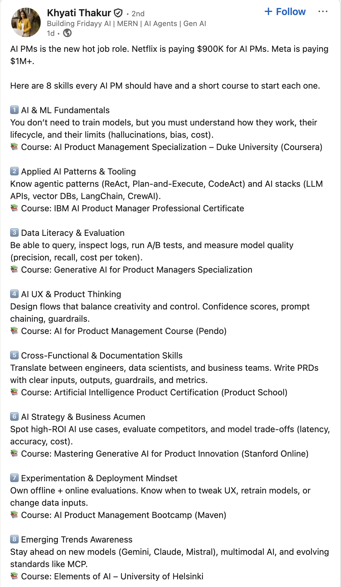
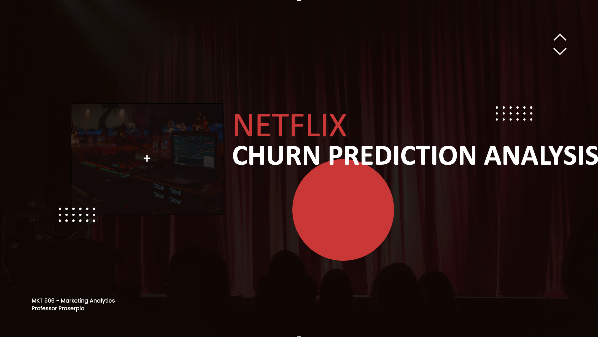

MKT 566 · Fall 2026
USC Marshall School of Business
Personal website: https://dadepro.github.io/.
Research on online marketplaces and policy:
My website has links to all my papers. They are also on SSRN.
| Instructor | Teaching assistant | |
|---|---|---|
| Name | Davide Proserpio | Raghav Sarmukaddam |
| Office | HOH 332 | HOH 311 |
| proserpi@marshall.usc.edu | sarmukad@usc.edu | |
| Hours | Tue 2–4 pm | Thu 2:30–4:30 pm |
Both by appointment as well.
Schedule. 11:00 am – 12:20 pm, Tuesday and Thursday, in JKP 112
Class website. https://github.com/dadepro/mkt566
Syllabus. mkt566-syllabus-proserpio.pdf
Most lectures involve examples and exercises. Some classes are given over entirely to exercises, discussion, or guest speakers.
I am also planning to have a few guest speakers, very likely from tech companies.
This class is hands-on. Bring your laptop and be prepared to analyze data, write code, and present results.
Slides, plus open-source reading links provided for each topic.
Open source
Not open source (slides, exercises, and code are)
IDE suggestions: VS Code (pretty much any programming language, integrates with Codex, Claude, and Copilot), RStudio (R only), Cursor.
Before the next class, install:
Optional: course materials live on GitHub, so skim git - the simple guide and the GitHub quickstart, or use the point-and-click GitHub Desktop app.
If this is the first time you have heard any of these terms, raise your hand and ask questions.
I expect you to use AI in this class. Learning to use it is an emerging skill. Keep the following in mind:
Hallucinations and mistakes are very common.
For transparency, every student submits a log of the LLM prompts used on each assignment.

That judgment is what this course trains: framing marketing questions, picking the right method, and turning analysis into decisions.
| Component | Weight |
|---|---|
| 4 individual assignments | 60% |
| Semester-long project (groups of 5–6) | 30% |
| Participation | 10% |
| Total | 100% |
No final exam. Your grade is the weighted average above.
Each submission is an R (Markdown/Quarto) or Python notebook, converted to HTML or PDF, containing:
Why a notebook? Reproducibility. Someone else, including future you, has to be able to re-run it and get the same output and results.
Analyze a real-world dataset to answer one or more marketing questions. For example:

ChatGPT and online content
Using Stack Overflow and YouTube data, students found a decline in Stack Overflow activity for coding topics (Python, Java) alongside an increase in AI-related videos on tech channels.
Sentiment analysis of Sephora reviews
Using customer review data, students asked whether reviews help identify which Sephora products get featured as trending on the website.
Breaking box office
Using Kaggle movie reviews and Box Office Mojo revenues, students documented a null result: customer reviews generally do not explain box office performance, though they may matter for less popular movies.
Gender effects in a dating app
Using Bumble review data, students found that although more users appear to be male, women rate the app higher than men. A nice application of the gender-guesser package.
I have data on Airbnb, TripAdvisor, Expedia, and Yelp. Ask me if you want it.
| Deliverable | Due |
|---|---|
| Form groups | September 15 |
| Mid-term proposal slides (~15 min incl. Q&A) | October 12 (presented Oct 13, 15) |
| Notebook with cleaning and analysis (HTML or PDF) | December 3 |
| Final presentation slides (~15 min incl. Q&A) | November 30 (presented Dec 1, 3) |
| Peer evaluations | December 15 |
Do you want me to form the groups, or would you rather do it yourselves?
10% of your grade, and it is not just coming to class.
Everything I have just discussed is in the syllabus. Please read it at least once.
Marketing analytics is the practice of measuring, managing, and analyzing data from marketing activities to optimize business performance.
It covers:
Creating figures, dashboards, and reports that present insights to stakeholders:
Which channels or campaigns deserve credit for conversions?
Group customers by behavior or demographics to tailor messaging; identify products consumers are likely to buy; product placement
Forecast campaign performance; predict churn; identify fraudulent activity such as fake reviews, accounts, and clicks; forecast prices
| Metric family | Examples |
|---|---|
| Acquisition | Cost per click, cost per acquisition |
| Engagement | Click-through rate, time on site |
| Conversion | Lead-to-customer rate, average order value |
| Retention | Churn rate, customer lifetime value |
| Incrementality | How much of the sales lift is attributable to the campaign |
Turning analysis into action:
By systematically applying statistical methods and data-driven storytelling, marketing analytics enables organizations to understand what works, identify growth opportunities, and maximize their return on marketing investment.
I assume you are familiar with basic statistics and probability. I can post review slides if that would help.
MKT 566 · Marketing Analytics